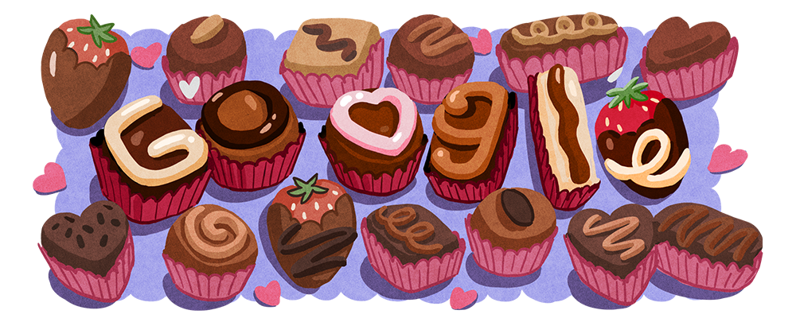
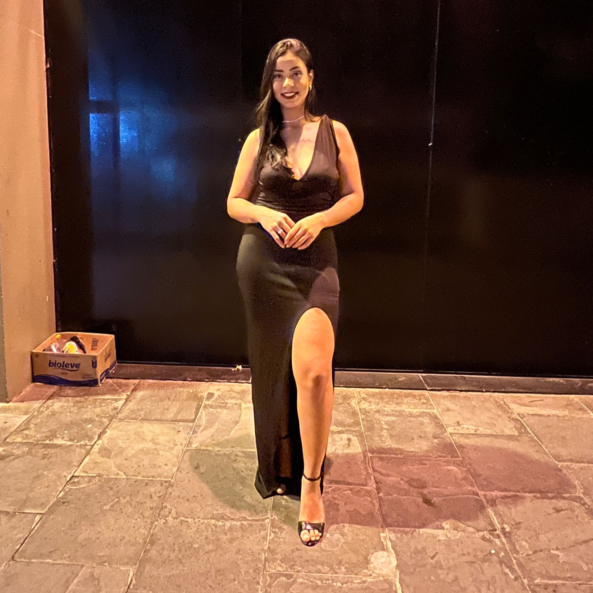
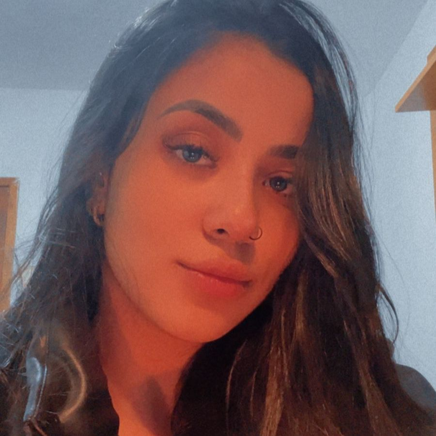
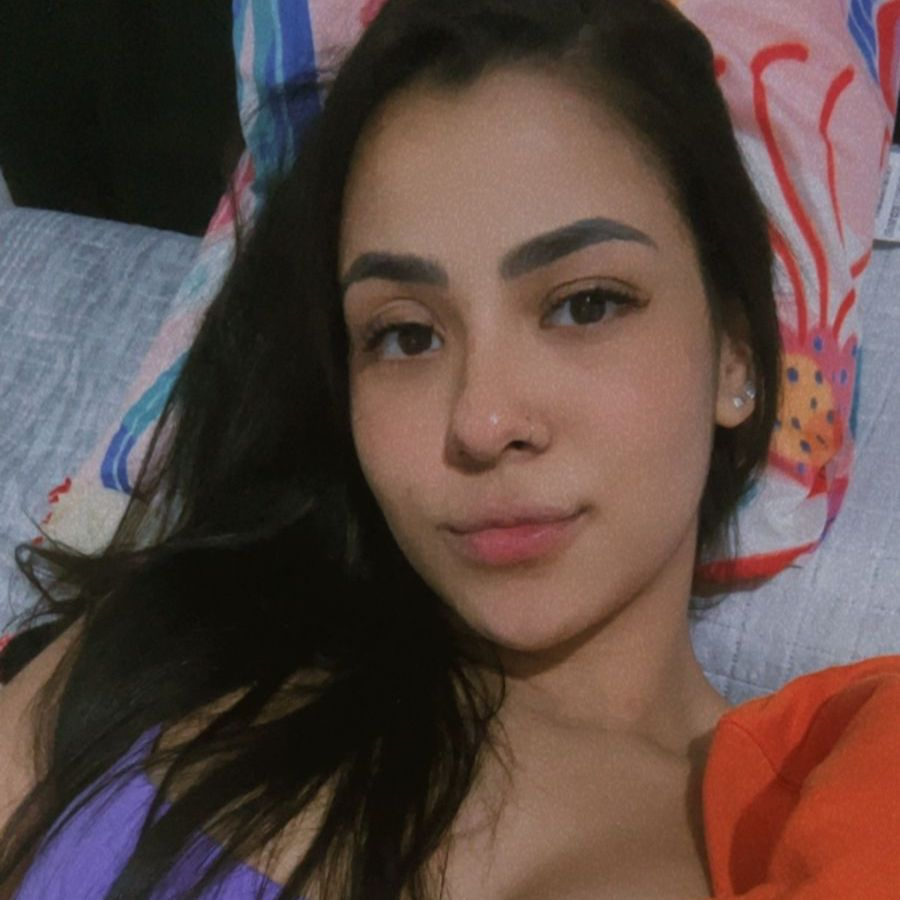

Mais conhecida como o amor da vida da Julia Padua! Roubou o seu coração num ensaio da convenção na qual tinha sido selecionada para o mesmo. Hoje se encontra com 26 anos, ama cachorrinhos, chocolate, ama cozinhar e ainda mais pra quem ama.. - a Julia se deu bem hahah, cozinha como ninguém, a Julia simplesmente AMA a comida dela! Dia 30/04/25 fizeram 5 meses de namoro (oficialmente), quem diria!
A primeira vez que a Julia a viu, foi como aqueles filmes chichês que tudo começa a ficar em câmera lenta.. Se apaixonou à primeira vista! Mas sabia que não era nada, (bom, achava né), até porque a Julia namorava na época, então seria aqueles amores pra admirar. O bom é que isso era um incentivo pra ir aos ensaios, pra vê-la. A coisa que ela mais gostava de fazer nos ensaios além de tocar, era admirar a beleza deslubrante de Graziely... até que no dia da convenção a Julia não aguentou guardar isso só pra ela e falou pra musa deusa grega que queria trocar uns beijos com ela. Mas nada aconteceu, o tempo passou e as duas foram selecionadas para tocar na mesma apresentação, e a Julia descobriu que nunca parou de sentir o que sentia pela Graziely, então quando a viu, quase teve um troço, coração a mil, estômago a mil, foi difícil conter as borboletas. Mas foi naquele dia que começaram a se falar com frequência, e foi ali que tudo mudou hehe. O resto é imaginável..
Eu Julia, tenho um orgulho enorme por você, Graziely! Eu te conheci depois das turbulências de sua vida, mas presenciei um acontecimento maravilhoso que foi a inauguração do SEU PetShop! Você é gigante! Só por ser mulher já é grandiosa, mas você é muito mais que isso! Você é muito mais que incrível! E eu tive a grandiosa boa sorte de te ter de acordar ao seu lado, não todos os dias ainda, mas logo logo menos! Você é o amos de todas as minhas vidas! Nunca achei que fosse te encontrar.. não foi tão rápido mas não foi tão difícil. Eu te amo com a minha alma, te amo tanto que dói. Eu sou completamente apaixonada por você! Eu vou te casar comigo e vai ser lindo! Feliz os melhores 5 meses da minha vida ao seu lado! De 5 meses de uma vida toda!